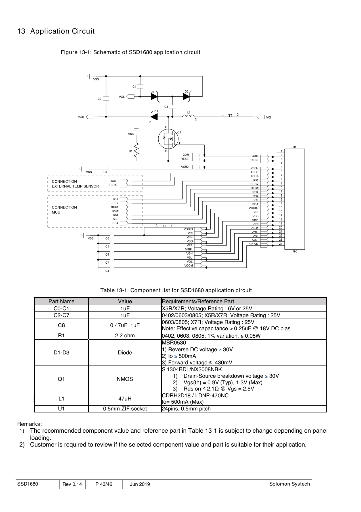

D2–D4 verified and updated — 23 October 2026
All three now use onsemi MBR0530T1G / C82046. The manufacturer specifies 30 V reverse, 0.5 A average current and maximum 0.43 V forward at 0.5 A under its stated test conditions. This meets the controller reference's listed diode criteria.
Pin 1 is cathode and pin 2 is anode. All three PCB mappings match. The standard SOD-123 lands closely match the recommended drawing; footprints, positions and routing are preserved.
Was this necessary? This is reference alignment, not a proven B5819W failure. Ratings reduce from 40 V / 1 A to 30 V / 0.5 A; reverse-voltage overshoot, current, heating and startup still need measurement.
Across the review, C35 was the clearest explicit component mismatch. The other capacitor changes improve margin; Q2, L1/R22, R21 and these diodes follow the reference circuit. We have not established that every original part was faulty.
Detailed verification and necessity assessment · Manufacturer datasheet · Package/polarity drawing
Verification complete: ERC, DRC/parity, board checks, all 15 regression tests and the refreshed manufacturing package pass. All 75 assembly assignments match; only the two existing footprint warnings remain. The diode labels were visually checked and PCB routing is unchanged.
Next: actual display/flex fit, supplier assembly review and powered bring-up. No full display or order sign-off.
R21 gate pull-down implemented — 22 October 2026
R21: 1 MΩ → 10 kΩ, C25744, existing 0402 footprint. This follows the Waveshare panel reference and provides a stronger pull-down when the gate driver is high impedance. The EPD_GDR-to-GND connection, placement and all PCB routing are preserved.
The schematic, generator, BOM selection and exact-part checks are updated. ERC, DRC/parity, all 15 regression tests and final manufacturing-package checks pass; only the two existing footprint warnings remain. Confirm gate-to-source voltage during startup, reset and shutdown on hardware; no powered qualification is claimed.
D2–D4 update is complete; physical fit and powered qualification remain open. Detailed evidence and remaining checks
L1 / R22 reference pair implemented — 22 October 2026
L1: 68 µH, Sunlord SWPA4030S680MT / C83473.
R22: 3 Ω, UNI-ROYAL 0402WGF300KTCE / C423196, 1%, 62.5 mW.
This approved pair follows the Waveshare panel reference. Both retain their existing footprints, placements and connections; PCB geometry and routing are unchanged. The schematic, generator, assembly selections and exact-part checks are updated.
ERC, DRC/parity, board checks and all 15 regression tests pass; only the two existing footprint warnings remain. The inductor has higher resistance and lower listed current ratings than the previous 47 µH part. Startup current, inductor temperature and resistor pulse/thermal stress still need bench verification.
R21 gate pull-down update is complete. D2–D4 update is complete. No complete display or order sign-off.
Detailed evidence and remaining checks · R22 exact part · Resistor manufacturer specifications
C26 and C30–C35 updates implemented; remaining boost review open
C35 replacement implemented: the previous X5R capacitor retained about 0.173 µF at 18 V in Samsung's typical curve. The SSD1680 reference specifies X7R and more than 0.25 µF at that bias for VCOM. New selection C28323 (1 µF / 50 V X7R 0805) gives about 0.739 µF typical.
C26 now uses Samsung CL31B475KBHNNNE / C51205: 4.7 µF, 50 V X7R, 1206. Its typical retained capacitance is about 2.61 µF at 20 V versus 0.75 µF for the previous part. The larger footprint and local switching traces are updated; EPD_SW-to-EPD_X connectivity is preserved. L1 ratings, R22 power, diode comparisons and connector tolerances are now documented. C30–C34 now also use CL21B105KBFNNNE / C28323, 1 µF, 50 V X7R, 0805. Their positions and net assignments are preserved; nearby rail and probe traces are adjusted for the larger pads. This improves capacitance margin; the explicit VCOM minimum is not being applied to every rail. ERC, DRC/parity, all 15 regression tests and final manufacturing-package checks pass; only the two existing footprint warnings remain. Other boost proposals, bench qualification and physical fit remain open; no order sign-off.
Read findings, evidence and exact recommendations · SSD1680 component requirements, p.43
View controller component requirements

Q2 replacement implemented: Si1308EDL-T1-GE3
The display controller drives Q2 to switch current through L1 and generate the display voltages. Matching MOSFET voltage and current ratings alone does not establish compatibility with that gate driver.
| Characteristic | Previous Q2: AO3400A | New Q2 / reference: Si1308EDL |
|---|
| Drain-source rating | 30 V | 30 V |
| Typical input capacitance, same 15 V / 0 V / 1 MHz test | 630 pF | 105 pF |
| Typical gate charge at 4.5 V / 15 V | 6 nC (5.7 A test) | 1.4 nC (1.4 A test) |
| Package | SOT-23 | SC-70 / SOT-323 |
Finding: six times the typical input capacitance at matching test conditions. Gate-charge tests use different drain currents, so their ratio is only indicative. This was a gate-driver loading concern, not proof of failure. The approved replacement now uses the reference MOSFET; remaining boost checks and bench validation are still open.
Implemented: user approved Q2 replacement with Vishay Si1308EDL-T1-GE3, LCSC C469327. Schematic, generator, PCB SOT-323_SC-70 footprint and six local trace segments updated; three zero-length routing stubs removed. Pin 1 remains GDR, pin 2 RESE and pin 3 SW. ERC and DRC/parity pass with only the existing U1/J1 footprint warnings. Manufacturing outputs regenerated; supplier assembly rotation remains a preview check.
Both Waveshare references show the same boost values: V3 p.26 and V4 p.28. Their connector labels conflict with their pin tables, so retain the page-7 pin map while resolving the reference discrepancy. Inductor saturation, diode switching/leakage, capacitor effective capacitance and voltage margin still need completion; this finding does not close the whole boost review.
Compare the two MOSFET electrical-characteristic tables
Ordered panel: Waveshare 2.13inch e-Paper, SKU 12672
V3/V4 clarification: Waveshare explicitly describes V4 as fully compatible with V3. Their page-7 bare-panel pin tables agree. We need not treat the revision choice as a connector-redesign blocker. This does not independently validate our custom boost components. Official compatibility statement.
User supplied this product link. Supplier lists a bare black/white 250 × 122 panel. Exact shipped revision and manufacturer panel code are not yet confirmed; do not assume GDEY0213B74 identity.
Waveshare V4 specification: the page 6 drawing shows 59.2 × 29.2 mm glass, 24 contacts at 0.5 mm pitch, 14.3 mm nominal tail projection and SSD1680Z8. Page 7 signal assignments agree with the designed panel interface. Actual insertion, pin-1 orientation and flex reach remain physical checks.
| Boost item | Current PCB / Good Display reference | Waveshare V3 p.26 / V4 p.28 |
|---|
| Inductor | 47 µH | 68 µH |
| Sense resistor | 2.2 Ω | 3 Ω for monochrome 2.13-inch |
| Gate pull-down | 1 MΩ | 10 kΩ |
| Flying capacitor | 4.7 µF / 25 V | 4.7 µF / 50 V |
Documentation conflict: page 7 says pins 1 and 4 are NC, pin 5 VSH2; page 28 instead labels them HLT_CTL, VGL and VGH. Do not alter connector nets from that generic-looking circuit figure without revision-specific confirmation.
Verdict: promising mechanical/interface match to the V4 drawing, but compatibility and boost settings are not signed off. Confirm the delivered label/revision and reconcile the supplier reference before deciding on component changes. Q2 replacement is implemented as described above; remaining boost components and physical fit are not signed off.
Your display circuit
Connections to compare
| Panel pin | Board connection |
|---|
| 8 · BS1 | GND selects 4-wire SPI |
| 9 · BUSY | GPIO48; HIGH means busy during operation |
| 10 · RESET | GPIO47; active LOW |
| 11 / 12 · DC / CS | GPIO21 / GPIO18 |
| 13 / 14 · clock / data | GPIO16 / GPIO17 |
| 15 / 16 / 17 | Logic supply / chip supply / ground: 3.3 V / 3.3 V / GND |
Current external boost: L1 68 µH, R22 3 Ω, R21 10 kΩ, C26 4.7 µF / 50 V X7R, Q2 Si1308EDL-T1-GE3 and D2–D4 MBR0530T1G. C30–C35 use 1 µF / 50 V X7R capacitors. These approved changes are implemented; dynamic performance and actual display fit remain to be verified.
Decision: support both static screens and playback progress
User requirement: support track/control updates and a playback progress bar. Use paced partial refreshes for progress, coalesce rapid wheel changes and allow periodic full refreshes to clear ghosting. The original Good Display datasheet page 10 lists 0.42 s typical partial refresh and 3 s full refresh at 25 °C and recommends clearing after five partial/fast operations. These are provisional reference figures, not confirmed limits for the ordered Waveshare panel. Select cadence and clearing policy from its supported driver and bring-up measurements.
This is a firmware/UI requirement, with no hardware change proposed. Keep progress cadence configurable. A 1-second interval would reach the recommended clearing count quickly, so it is a stress-test option rather than an accepted UX default. Avoid updates when the displayed progress would not change a pixel.
Firmware requirements
Use the supported driver and waveform configuration for the delivered Waveshare V3/V4 panel; honor reset, BUSY and power sequencing. Bound BUSY waits and recover from timeout. After a completed refresh, enter panel sleep when idle. Hardware reset is needed to leave deep sleep. The panel supply shares 3.3 V with the MCU, so panel sleep is not physical power isolation.
Still pending: remaining boost-part ratings/dynamic validation, rail measurements during startup and full refresh, FPC contact orientation and actual flex fit. No complete display sign-off is claimed.